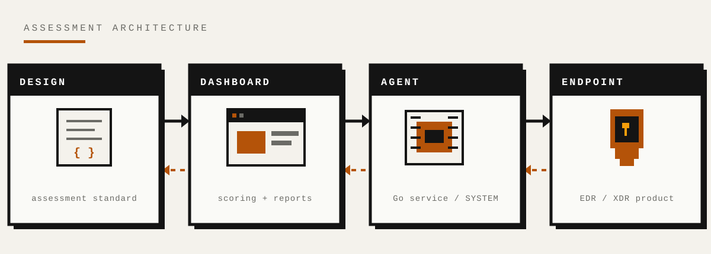
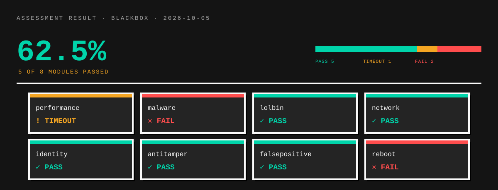

Contents
The problem
Endpoint security products are usually evaluated through vendor claims and third-party lab scores. An operator standing a product up has no independent way to check which adversary techniques actually stop on their own endpoint, in their own configuration.
AgentIde closes that gap with a module-driven assessment. Each module executes a technique, records whether it was prevented, detected, or completed, and reports the outcome against a MITRE ATT&CK technique identifier.
Detection is not prevention. A product can raise an alert and still let the technique finish. The assessment records the outcome at the endpoint, not the alert in the console — which is the difference between a product that noticed and a control that held.
This page documents the method, the scoring model, and the result of one lab run. It deliberately does not publish a parameterised, ready-to-run evasion sequence.
Architecture
Three layers, each with one job: an agent that executes, a dashboard that scores and reports, and a design layer that defines what a valid assessment is.

Agent
A Windows service written in Go. It discovers installed security products, runs the assessment modules under a selected profile, streams every result over a WebSocket, and records the full path of each file a module creates. That last detail is deliberate: “the technique was blocked” and “we know exactly what it touched” are different guarantees.
Dashboard
A React single-page application backed by an Express API and PostgreSQL. It aggregates results, maps each finding to ATT&CK, scores the run, and renders the report. The renderer is deterministic: the same run renders the same HTML twice, so an export can be compared byte for byte.
Design layer
The assessment standard is data, not code — which modules run under each profile, how outcomes are weighted, and what counts as a pass. Keeping it separate from the engine means the standard can be reviewed, argued with, and edited without touching the execution path.
Every module result carries an outcome, a duration, a MITRE mapping, and a test type. That is the minimum needed to defend a finding months later, when nobody remembers the run.
How an assessment runs
- Deploy the agent — installed as a SYSTEM-level service with a bootstrap token. On first contact the dashboard issues a per-host token, so possession of a shared secret alone is not enough to impersonate an existing host.
- Choose a profile —
rapid,apt, orbaseline. Each selects a different subset of the standard; the run in section 04 usedrapidwith blackbox testing. - Execute modules — technique checks covering execution, credential access, persistence, network behaviour, identity, and anti-tamper resilience.
- Score and correlate — results are linked by session and mapped to ATT&CK technique identifiers, then aggregated into a single run score.
- Report — pass and fail counts, an overall score, and a written assessment of what was caught and what was not.
A module result carries the same fields whether it is read on screen, exported as HTML, or exported as JSON:
{
"module": "lolbin",
"result": "pass",
"mitre": "T1059.001",
"test_type": "blackbox",
"duration_ms": 6900
}A run describes one endpoint, at one time, under one profile. It is evidence about that configuration — not a certification of the product and not a guarantee about the next build.
Findings — proof of concept
The published run is a blackbox assessment of a single Windows lab endpoint, DESKTOP-L07M1SS, running Microsoft Defender. It was exported on 2026-10-05 at 16:05 UTC.

| Module | Result | Duration | MITRE | Test type |
|---|---|---|---|---|
performance | TIMEOUT | 35.0 s | Unknown | blackbox |
malware | FAIL | 15.3 s | T1059 | blackbox |
lolbin | PASS | 6.9 s | T1059.001 | blackbox |
network | PASS | 29.8 s | T1071.001 | blackbox |
identity | PASS | 269 ms | T1110.003 | blackbox |
antitamper | PASS | 292 ms | T1562.001 | blackbox |
falsepositive | PASS | 6.8 s | T1562 | blackbox |
reboot | FAIL | 0 ms | T1547.001 | blackbox |
Score: 62.5% — five of eight modules passed. The performance module exceeded its 35-second budget and was forcefully timed out. The reboot module was skipped because a reboot was not permitted on the host; both are recorded as not passed rather than silently discarded.
One kill/recovery event was observed outside the module score: the agent was externally terminated and recovered automatically after 45m 32s of downtime, on recovery attempt 5 with three kills recorded for the run.
Defender blocked command execution, outbound C2, password spraying, and tamper attempts. It did not remove an EICAR test file within the five-minute check window. Those are findings about one endpoint and one configuration — including the gaps.
MITRE ATT&CK coverage
Every module maps to a technique so the result can be compared across products, versions, and configurations. The outcome describes whether the technique was prevented on this endpoint — not whether a console alert fired.
| Technique | Name | Module | Outcome |
|---|---|---|---|
T1059 | Command and Scripting Interpreter | malware | FAIL |
T1059.001 | PowerShell | lolbin | PASS |
T1071.001 | Web Protocols | network | PASS |
T1110.003 | Password Spraying | identity | PASS |
T1562.001 | Disable or Modify Tools | antitamper | PASS |
T1562 | Impair Defenses | falsepositive | PASS |
T1547.001 | Registry Run Keys / Startup Folder | reboot | FAIL |
Status is always carried by a colour, a glyph, and a text label together. Colour alone never carries meaning, in the interface or in the exported report.
Service self-protection
An assessment instrument that a security product can silently stop is not a reliable instrument. The agent is built in layers so that being terminated is an observable event, not a quiet gap in the results.
Watchdog
A child process watches a heartbeat. If a module exits without restoring the vendor state it changed, the watchdog re-enables the vendor after a fixed deadline rather than leaving the endpoint in a degraded state.
Guardian service
A second Windows service keeps the first one alive. It recreates the service registration if it is deleted, restores its start type, and restores the binary from a backup copy if the executable is removed.
Hardened service descriptor
The service is registered so that stop, reconfigure, and delete requests are denied to SYSTEM. A user-mode product cannot quietly disable the agent through the ordinary service control path.
Escalating recovery
Restarts follow a short escalating schedule. The run in section 04 measured a 45m 32s gap between an external kill and full recovery — visible in the report, not hidden behind a “still running” status.
A kernel-mode product can still terminate the agent. These layers mitigate that outcome and make it visible; they do not prevent it. The honest claim is resilience with evidence, not invulnerability.
Safety & authorisation
AgentIde stops security services, terminates vendor processes, and installs a hardened SYSTEM service that resists removal. Running it on a system you do not control can disable that system's protection and may breach computer-misuse law. Use it only on systems you own or have written authorisation to assess.
- Written authorisation first. Define the scope, the endpoint list, and the time window before anything runs.
- Lab or approved change window. Do not point it at production endpoints without an approved change and a tested rollback path.
- Treat results as sensitive. A report describes exactly where a control failed on a named host.
- Restore the endpoint. Confirm the vendor product is re-enabled and the agent removed after the assessment.
This page publishes the method and the scoring model. It withholds copy-paste operational detail that would let an unauthorised actor run a complete undetected assessment. Every example uses reserved values: 192.0.2.10 (RFC 5737), example.com (RFC 2606), <AGENT_TOKEN>, and port 8443. No customer endpoint data, real tokens, internal addresses, or organisation names are published. The endpoint named in section 04 is the author's own lab machine.
This project is published for education and research. It documents how adversary techniques can be assessed against endpoint security products, and what the limits of that assessment are.
Limitations & out of scope
- One endpoint, point in time. The published run says nothing about coverage across an estate, and nothing about a different product build.
- Evidence, not a guarantee. A pass means the technique was prevented that time, under that profile, on that host.
- User-mode self-protection. A kernel-mode product can still terminate the agent; recovery reduces the gap but does not eliminate it.
- Opinionated weights. The score is a defensible default, not an industry standard. It is meant to be edited in the design layer.
- Blackbox only in this run. No live or inline comparison was performed, so the published result does not separate detection from prevention beyond the module outcome.
- A timeout is a result. The performance module is recorded as not passed rather than retried until it succeeds.
- Reboot requires a window. Without permission to reboot, the persistence check is skipped and recorded as FAIL.
- Not hardened for hostile deployment. This is a proof of concept and has not been through an external security review.
Summary
AgentIde is a working proof of concept in three parts: an agent that executes ATT&CK-mapped modules on a real endpoint, a dashboard that scores and reports the run deterministically, and a design layer that keeps the assessment standard reviewable on its own.
The run shows that the instrument produces a reproducible, defensible result — including the parts that failed. The most useful output is not the 62.5%. It is the three lines that did not pass, the evidence recorded beside each one, and the recovery gap that proves the agent can be stopped and observed doing it.
What the project does not claim is equally important: it is not a certification, not an estate-wide measurement, and not a guarantee against a determined adversary.